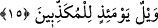

Bu son âyette “yevmu’l-fasl/hüküm günü” ifâdesi açık olarak kullanılmaktadır. Oysa
bu kelime daha önce geçtiği için yerine zamir getirilebilirdi. Ancak zamirin getirilmeyip
de kelimenin açık olarak getirilmesi o günün korkunçluğunu ve fecaatini arttırmak
içindir. Âyette hüküm verme gününün çok korkunç, benzersiz ve kimsenin takdir
edemeyeceği, mâhiyetini anlayamayacağı bir gün olduğu vurgulanmaktır.
15. O gün (Peygamber’i ve âhireti) yalan sayanların vay hâline!
“O gün” o korkunç gün, Rahman’ın yaratıklar arasında hüküm vereceği günü “yalan
sayanların vay hâline!” Yâni o gün, bunu yalan sayanlar helâk olacaktır.
Bu cümlenin aslı; Allah hüküm verme gününü yalan sayanları helâk edip, yok
edecektir. Ya da o kimse kendisi helâk olacaktır. Bu âyet-i kerîmede “veyl” kelimesi,
söz konusu helâkin bedduâya uğrayan kimseler açısından devam edeceğine ve
değişmeyeceğine işâret etmek içindir.
Bâzı âlimler bu âyette yer alan “veyl” kelimesinin yukarda olduğu gibi bedduâ anlamı
ifâde eden bir kelime değil, cehennemde bir vâdînin adı olduğunu söylemişlerdir. Bu
öyle bir vâdîdir ki oraya dağlar atılsa derhal eriyip, yok olurlardı.
Cüneyd (k.s.) der ki: O gün dünyada bâtıl iddiâları ileri sürenlerin vay hâline!